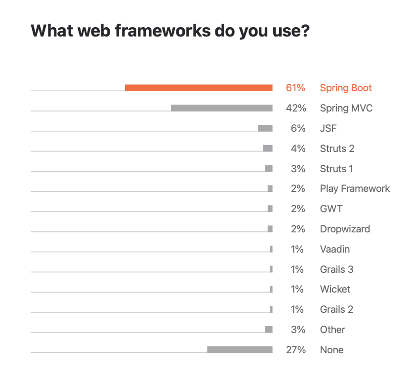
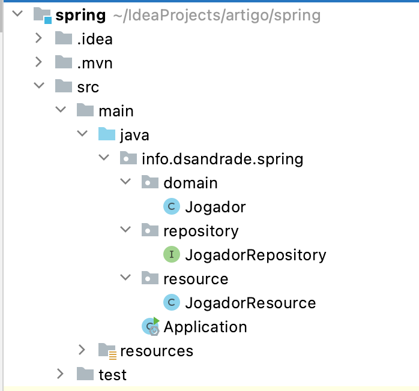
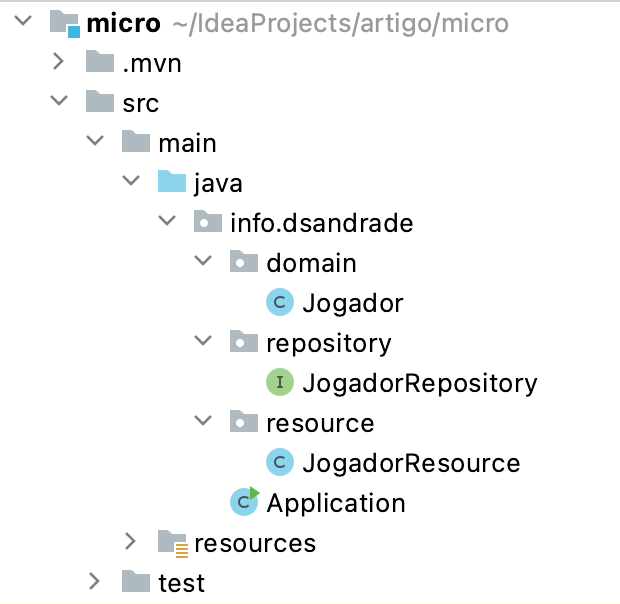
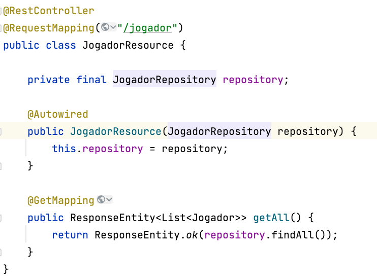
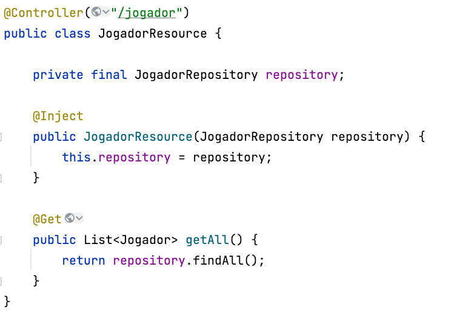

Fala pexadas!! Tudo bom com vocês?
Depois que entramos de vez na era dos microserviços, várias ferramentas utilizadas no passado, precisaram ser atualizadas para atender esse novo momento. E a ferramenta principal foi o framework utilizado. Que tal uma pequena introdução?
Introdução
Podemos definir um framework em desenvolvimento de software, como sendo um conjunto de código que tem como objetivo facilitar a criação e manutenção de um software, trazendo consigo vários códigos comuns e genéricos.
Em um passado não muito distante, no desenvolvimento de aplicações web utilizando Java, usáva-mos frameworks como Struts, JSF, VRaptor, Spring MVC e por ai vai.
Esses frameworks possuem várias funções e abstrações de todos os níveis e tamanhos, e para serem genéricos o suficiente, precisavam ter muitas abstrações que quase sempre não eram utilizadas.
Para citar alguns exemplos, em alguns lugares que trabalhei no passado, o simples fato de dar um start no servidor para subir a aplicação no meu computador, demorava cerca de 5 minutos para estar pronto para o uso. Como era um programador júnior na época, uma simples alteração exigia que eu fizesse de 6 a 8 starts no servidor de aplicação, o que me tomava algo em torno de 40 minutos aguardando o serviço estar pronto.
Isso ocorria porque a empresa utilizava um framework robusto para fazer todas as tarefas da empresa em uma única aplicação.
Então chegamos a era dos microserviços. A definição de microserviços pode ser feita como uma minúscula porção do software que trabalha de maneira independente, focada em uma pequena e única responsabilidade.
Sendo assim, os frameworks se especializaram, e um software de vendas por exemplo, que antes era feito em um único software, foi quebrado em pequenas responsabilidades como: A parte do estoque, a parte da venda, a parte do cliente. E cada parte, seria um software separado dos demais. (Claro que uma divisão como essa pode render uma discussão imensa, mas serve como um exemplo)
Então chegamos aos frameworks especializados. O famosos e gigante Spring MVC, quebrou o seu gigante framework em uma parte core, e as outras partes que podem não chegar a ser utilizadas, agora são opcionais, chamando esse novo framework de Spring Boot.
Mas é aí? Por que fazer essa análise?
O primeiro detalhe é que o Spring Boot está sendo muito utilizados nos dias atuais, pela fama que o seu framework pai já possuia na comunidade. Sendo assim a primeira opção para essa análise. Segundo a pesquisa da JetBrains 2020 o framework mais utilizado é o Spring Boot como na figura abaixo:

Um detalhe extremamente simples, é que o Spring Boot, foi criado a partir de um framework já existente, com fama de um super framework preparado para qualquer coisa, o que pode impactar na performance e na quantidade de coisas desnecessárias que podemos não usar. Sendo assim, decidi comparar com um framework que já nasceu nessa era dos microserviços e foi criado com esse propósito, o Micronaut.
A escolha foi totalmente aleatória, poderia ter escolhido Helidon, Quarkus, Spark, dentre outros.
Benchmark
Definição dos testes
Vamos fazer o seguinte teste. Primeiro vamos gerar 2 aplicações somente com as funções básicas de cada framework como na tabela a seguir:
As versões dos frameworks serão: Spring Boot v2.5.2 e Micronaut v2.5.7
| Framework | Dependências | Site |
|---|---|---|
| Spring Boot | Spring Web, Spring Data JPA, PostgreSQL Driver, Lombok | https://start.spring.io |
| Micronaut | data-jpa, postgres, lombok | https://micronaut.io/launch |
Utilizaremos JDK versão 11.0.7+8-LTS com HotSpot 64-Bit Tiered Compilers, em uma máquina rodando Mac OS X 64 bits, com 8GB de memória RAM, processador Intel com 4 processadores. Vamos também utilizar um banco de dados PostgreSQL alocado em um servidor na nuvem.
Passo 1
Vamos utilizar o hibernate nas 2 aplicações para acessar uma tabela denominada Jogadores, que serão mapeadas apenas as colunas id e nome dessa tabela. As estruturas dos projetos estão definidas nas imagens abaixo:
| Spring Boot | Micronaut |
|---|---|
|  |  |
Como podemos ver a mesma estrutura é aplicada aos dois projetos, inclusive compartilhando o mesmo código dos pacotes domain e repository e no resource cada projeto apresenta suas diferenças para implementações como vou mostrar abaixo:
| Spring Boot | Micronaut |
|---|---|
|  |  |
Inicio dos testes
1º teste - Inicialização livre
Faremos 3 starts para analisar o uso de memória livre que cada framework faz no warmup (inicialização) da aplicação sem fazer nenhuma chamada para a aplicação. Vamos aos resultados
| Projeto | 1º start | 2º start | 3º start | Média de classes carregadas | Tempo médio de inicialização (segundos) |
|---|---|---|---|---|---|
| Spring Boot | 98MB | 99.6MB | 99.5MB | 10.768 | 11,6 s |
| Micronaut | 84MB | 65MB | 99MB | 10.050 | 10,3 s |
Como podemos ver na tabela acima, se as memórias no momento da inicialização são bem parecidas, embora a quantidade de classes carregadas pelo Spring Boot seja um pouco maior. Isso se reflete também no tempo de inicialização, dando uma pequena vantagem para o Micronaut.
Temos que lembrar que por padrão, o Spring Boot opera com o Tomcat como servidor de aplicação e o Micronaut com o Netty. Ambos podem alterar as configurações padrão, mas não foi o caso no nosso teste em questão.
2º teste - Mínimo de memória
Nesse segundo teste, vamos saber qual o menor valor de memória que a aplicação precisa para ficar estável para receber requisições. Ainda assim não faremos chamadas para a aplicação.
| framework | 10MB | 12MB | 13MB | 15MB | 19MB |
|---|---|---|---|---|---|
| Spring Boot | Não | Não | Não | Não | OK |
| Micronaut | Não | Não | OK | OK | OK |
Como podemos ver acima, somente para fazer o arranque, o Spring Boot necessita de 46% a mais de memória que o Micronaut. Uma possível explicação para isso é o fato da quantidade de classes a mais que ele precisa inicializar na sua inicialização.
3º teste - Requisição com mínimo de memória
Agora vamos tentar solicitar a lista de jogadores para as duas aplicações utilizando o mínimo de memória. A tabela contém 161 registros.
| framework | Tempo |
|---|---|
| Spring Boot | 24.853ms |
| Micronaut | Não |
Com o mínimo de memória, o Micronaut não conseguiu trazer os dados da tabela. Então colocamos os mesmos 19MB da aplicaçào com Spring Boot para fazer um novo teste, e ele conseguiu trazer a lista em 3.352ms.
4º teste - 32MB fazer um teste de carga
Com esse teste, vamos estabilizar as duas aplicações com 32MB de memória na JVM (-Xmx) e vamos descobrir quantos acessos simultâneos cada aplicação aguenta receber.
| framework | Conexões simultaneas | Tempo médio de resposta (ms) |
|---|---|---|
| Spring Boot | 109 | 6102 |
| Micronaut | 249 | 14244 |
Algumas coisas precisam ficar claras. O teste foi feito utilizando o Apache Benchmark e o comando utilizado foi:ab -n 1000 -c n http://localhost:8080/jogador onde ‘n’ é o numero de conexões simultâneas.
Outra coisa que precisamos destacar é o fato de que as duas aplicações estão utilizando o Hibernate como camada intermediária com o banco de dados. Isso faz com que a resposta do banco de dados para a aplicação utilize suas camadas de cache (C1 e C2) para que a resposta seja dada no menor tempo possível. A média de tempo de resposta do Hibernate foi em torno de 450ms para cada request.
Sendo assim, fazendo uma rápida análise na tabela acima, que temos que fazer um trade-off sobre o que queremos para a nossa aplicação. O tempo de resposta foi 58% mais rápido no Spring Boot, mas em compensação, o Micronaut recebe 128% a mais de requisições. Então, os requisitos não funcionais do sistema precisam ser levados em consideração para uma escolha do framework nesse sentido, ou até mesmo para dimensionar a quantidade de recurso que será utilizado na aplicação.
5º teste - Empacotamento
Como último teste, vamos fazer o empacotamento das aplicações utilizando o maven e gerando o que chamamos de fat jar. Um jar executável com todas as dependências inclusas. Iremos analisar o tempo para a geração do jar e o seu tamanho final.
| framework | tempo médio (s) | tamanho |
|---|---|---|
| Spring Boot | 5.06 | 36MB |
| Micronaut | 9.56 | 29MB |
Nesse teste, rodamos o comando mvn clean package para fazer o empacotamento da aplicação. O Spring Boot teve um tempo de empacotamento menor, mas gerou um arquivo maior se comparado com o Micronaut. Talvez isso seja explicado pelo algoritmo de compressão utilizado pelo Micronaut que, para ter uma maior compressão perde um pouco mais de tempo no empacotamento.
O que ainda não consideramos é que essa aplicação é extremamente simples. A medida que a aplicação aumenta a quantidade de dependências, esses tempos e o tamanho do arquivo gerado no final, tende a aumentar.
Conclusão
Então pexadas, esses testes trazem uma importância muitas vezes ocultas nos requisitos não funcionais de um sistema. Ele pode indicar não somente o framework que vc deve utilizar para atingir suas métricas, mas como também o tipo de banco de dados, a quantidade de recurso utilizado na aplicação e até mesmo o tipo de tunning a ser utilizado pela sua aplicação.
Espero que tenham gostado desse artigo e até a próxima PEXADAS.